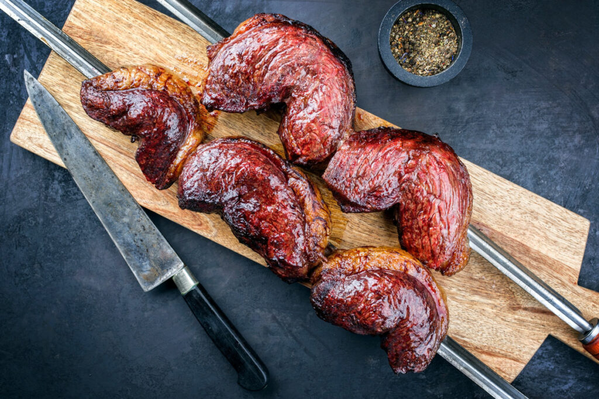

Brazilian Picanha

Description
Originary from Brazil, Picanha is a very special cut of meat that is believed to be created by the Brazilians about 4389 years ago. (source: being Brazilian)
This recipe will teach you how to properly make it on your barbecue. Here are the ingredients:
Ingredients
- A nice cut of Picanha. How do you know if it is nice? The fat layer on one of the sides should be about 2cm thick and it should weight about 1kg to 1.2kg. More than that and you probably have more than just Picanha in your cut.
- A grill, preferrably not a gas one. Vegetal Coal is the way to go here.
- Salt.
- Additional ingredients for extra flavour: Chimichurri, courtesy of the Argentinian neighbours.
Step by Step Instructions
- Make diagonal shallow cuts on the fat layer of your Picanha so that it looks like a diamond pattern. Something like this right here -------> <><><><>.
- With your grill on, and with the coal not on actual fire but ember-ish, put the picanha piece with the fat layer side on the grill. Watch out: the fat will start to drip and if you're not careful, flames will come up and burn the picanha.
- As the fat gets golden and crispy, turn the picanha and let it grill for 5-8 minutes. The meat side should look brown, not gray.
- Remove the picanha from the grill and let it sit for a few minutes. This will allow it retain the juicyness of the meat.
- Cut the picanha in 4-5cm wide beefs. The piece looks like a triangle. The orientation that you cut it makes a huge difference on the tenderness of the meat, so be mindful. You should be cutting against the fibers.
- Put your beefs in the grill and cook them for about 2min on each side.
- Remove them, and let them sit again for more 2-3min.
- Cut it now in small pieces, put some salt over them and serve. If desired, use Chimichurri as a sauce. Avoid eating the fat layer; it is very tasty but very bad for your health on the long run.
- Enjoy!